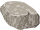
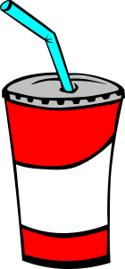
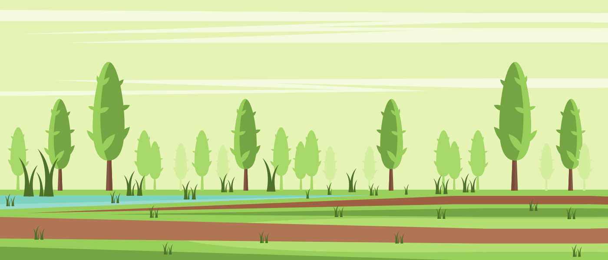
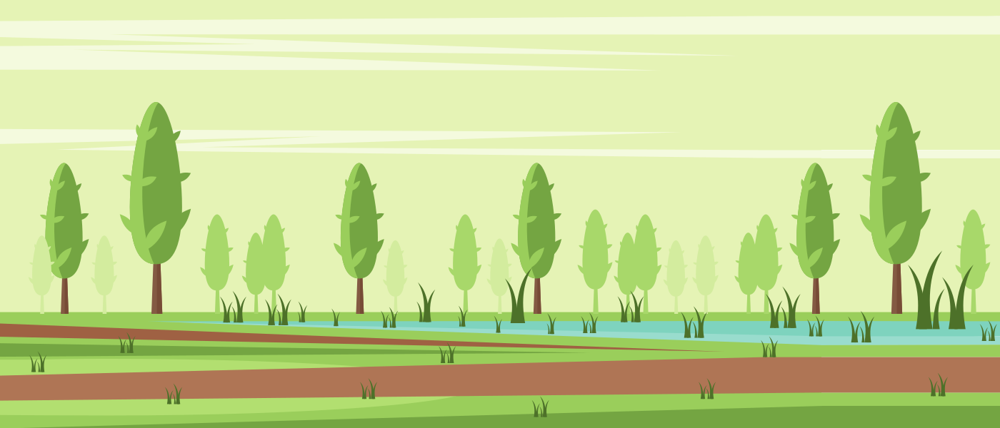
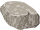
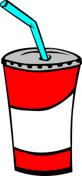
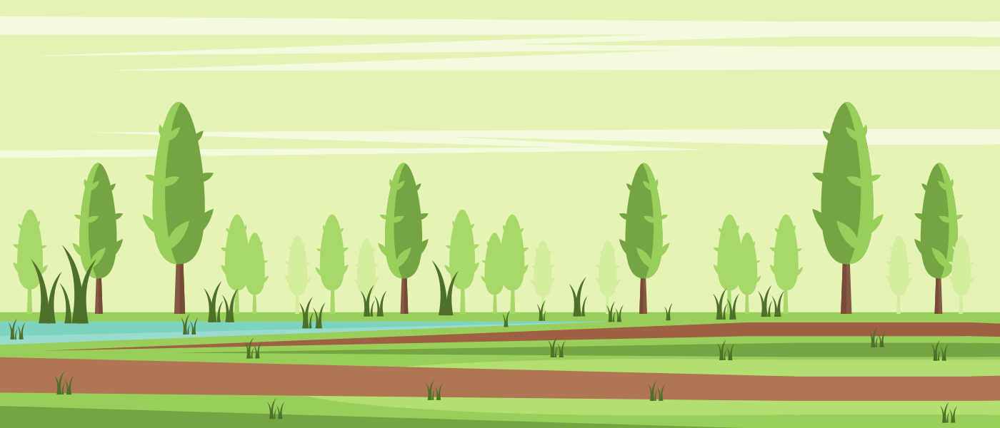
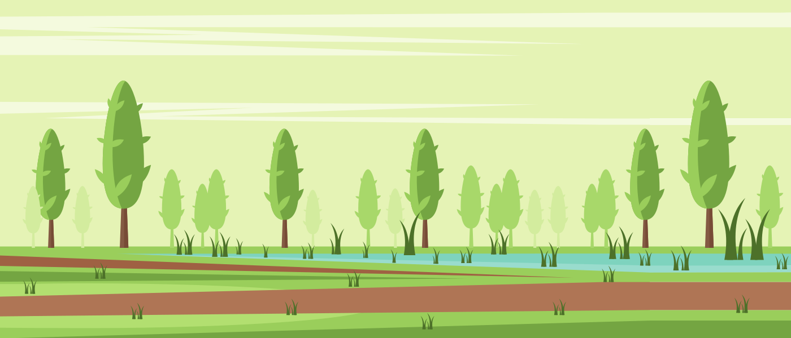

Koniec gry
Instrukcja gry
Wcielasz się w postać zawodowego biegacza, który startuje w długodystansowych zawodach.Twoim zadaniem jest zbierać napotkane banany, które dostarczają energii na dalszy bieg oraz magiczny napój nawadniający organizm.Za każdego banana otrzymujesz 1 pkt, natomiast napój nabija na licznik 3 pkty.Uważaj na pojawiające się kamienie, które musisz przeskoczyć, by uniknąć skręcenia kostki.Skok wykonujesz po naciśnięciu przycisku .Gra kończy się w momencie kolizji z kamieniem.